방송통신산업기사 (2005-09-04 기출문제)
1과목: 디지털 전자회로
1. 그림의 증폭 회로에서 S를 단락 시켰을 경우에도 그 값의 변화가 거의 없는 것은?
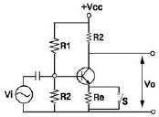
- 증폭기의 입력저항
- 증폭기의 안정도
- 증폭기의 전류 이득
- 증폭기의 전압이득
(정답률: 알수없음)

2. T플립플롭을 토글(toggle) 플립플롭이라고 하는 주된 이유는?
- 상태변화를 위해서는 토글스위치가 필요하므로
- 2개의 입력펄스마다 토글되므로
- 출력이 스스로 토글되므로
- 각 입력펄스마다 출력이 토글되므로
(정답률: 알수없음)
3. 수정진동자의 지지기(holder)가 갖추어야 할 조건으로 적합 하지 않는 것은?
- 진동 에너지(energy)에 손실을 주지 않을 것
- 지지기 및 전극과 수정 면사이의 상대위치 변화가 원활할 것
- 외부로부터 기계적 진동이나 충격에 의해서 발진에 지장이 생기지 않을 것
- 기압, 온도, 습도의 영향을 받지 않는 구조일 것
(정답률: 알수없음)
4. 다음 표와 같은 Karnaugh map을 최소화하면?
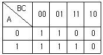
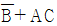
- B + AC
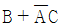
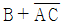
(정답률: 알수없음)
5. R-S Flip-Flop을 J-K Flip-Flop으로 만들고자 할 때 필요한 게이트(Gate)는?
- OR gate 2개
- AND gate 2개
- NOR gate 2개
- NAND gate 2개
(정답률: 알수없음)
6. RLC 직렬공진 회로에서 공진주파수에 대한 선택도 Q의 값은? (단, ω 는 각속도)
- R/ωC
- L/RC
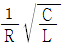
- ωL/R
(정답률: 알수없음)
7. 그림과 같은 회로는 무슨 회로인가?
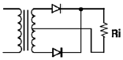
- 반파 정류회로
- 전파 정류회로
- 배 전압 회로
- 필터 회로
(정답률: 알수없음)
8. 변조도 40[%]인 진폭변조에서 반송파의 평균전력이 10[kw]이었다면 피변조파의 평균전력은 몇 [kw]인가?
- 10.8
- 8.3
- 4.2
- 2.5
(정답률: 알수없음)
9. 반송파 Vc = Vc sin ωct를 Vm = Vm sin pt 로 진폭변조했을 때 피변조파 v(t)의 식은?
- v(t) = (Vc + Vm)sin pt
- v(t) = (Vc + Vm sin pt)sin ωc t
- v(t) = (Vc + Vm)sin ωct
- v(t) = (Vc sin ωct + Vm)sin pt
(정답률: 알수없음)
10. 다음 반복 펄스 파형에서 펄스의 점유율은 몇 [%]인가? (단, τ = 0.5[μs], T = 10[μs])
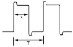
- 5[%]
- 10[%]
- 20[%]
- 25[%]
(정답률: 알수없음)
11. 그림과 같은 논리 회로의 출력은?
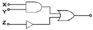
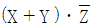
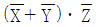
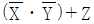
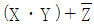
(정답률: 알수없음)
12. 수정편의 등가회로에서 L = 25[mH], C = 1.6[pF], R = 5[Ω]일 때 수정편의 Q 는 얼마인가?
- 25000
- 12500
- 10000
- 5000
(정답률: 알수없음)
13. 그림과 같은 회로에 입력 Vi가 인가되었을 때 출력은 어느 것이 가장 적당한가?
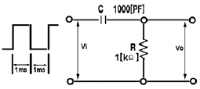
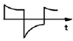
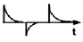
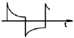
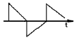
(정답률: 알수없음)
14. 다음 중 그림의 회로에서 궤환비(β)는?
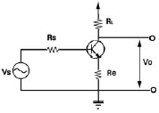
- -RL
- -(Re + RL)
- -(ReRL)
- -Re
(정답률: 알수없음)
15. 4개의 J-K 플립플롭을 이용하여 구성할 수 있는 분주기의 최대값은 얼마인가?
- 8분주기
- 10분주기
- 16분주기
- 24분주기
(정답률: 알수없음)
16. 2진수 1100을 그레이 코드로 변환한 것은?
- 1111
- 1000
- 1010
- 0011
(정답률: 알수없음)
17. 논리식 A ( A + B + C )를 간단히 하면?
- A
- 0
- 1
- A + B + C
(정답률: 알수없음)
18. 다음 중 에미터 폴로워(emitter follower)의 특징이 아닌것은?
- 입출력 임피던스가 대단히 높다.
- 부하 저항이 변화해도 전류, 전압 이득은 일정하게 유지된다.
- 전압이득은 1에 가깝다.
- 전류이득이 크다.
(정답률: 알수없음)
19. 다음 그림의 회로는 어떤 역할을 하는가?
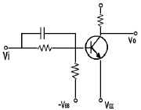
- NOT 회로
- AND 회로
- OR 회로
- exclusive OR 회로
(정답률: 알수없음)
20. 그림에서 입력 전압 V1 및 V2와 출력전압 Vo의 관계는?
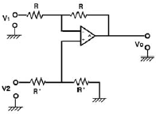
- Vo = V2 - V1
- Vo = V1 - V2
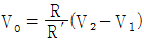
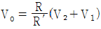
(정답률: 알수없음)
2과목: 방송통신 기기
21. MPEG에 대한 설명 중 맞는 것은?
- MPEG는 디지털 오디오, 비디오 부호화 분야의 국제표준이다.
- MPEG는 컬러 정지영상의 압축표준이다.
- 멀티미디어 정보, 수순, 조작 등과 그들의 조합을 하나의 객체로서 부호화해서 멀티미디어, 하이퍼미디어 타이틀로 제작하기 위한 시나리오 기술 방법에 관한 국제 표준이다.
- 오디오 비주얼 통신용 다중화에 관한 국제 표준이다.
(정답률: 알수없음)
22. 위성방송의 단점을 설명한 것이다 바르지 않게 설명한 것은?
- 강우에 영향을 많이 받아 감쇠가 생긴다.
- 태양 잡음 및 지구 일식 등의 영향을 받는다.
- 신호의 시간 지연이 발생한다.
- 방송이 저용량이며 상태가 저화질이다.
(정답률: 알수없음)
23. NTSC 방식에서 VITS(Vertical Interval Test Signal)을 삽입할 수 있는 버티컬 블랭킹(Vertical Blanking)구간이 아닌 것은?
- 17 Line
- 19 Line
- 21 Line
- 23Line
(정답률: 알수없음)
24. NTSC TV 방식의 설명이 아닌 것은?
- 6[MHz]의 채널 대역을 갖는다.
- 주사선수는 625개이다.
- 4.5[MHz] 의 음성 반송파를 갖는다.
- 초당 약 30 프레임을 갖는다.
(정답률: 알수없음)
25. 100% 화이트 기준 레벨은 몇 IRE인가?
- 0 IRE
- 7.5 IRE
- 100 IRE
- 140 IRE
(정답률: 알수없음)
26. 문자다중방송이란 TV 방송 전파의 틈새를 이용하여 문자나 도형 정보를 TV 방송파에 다중화하여 방송하게 된다. TV영상신호의 어느 부분에 중첩하는가?
- 수직귀선기간
- 수평귀선기간
- 수직귀선소거기간
- 수평귀선소거기간
(정답률: 알수없음)
27. 컬러 TV 송신기에서 부변조(Negative Modulation)를 하는 이유로 가장 타당한 것은?
- 신호 복조시 기준신호로 사용하여 색도신호의 상호 영향을 감소하기 위하여
- 한쪽 주파수 대역폭만을 사용하여 소요 주파수 대역폭은 유효하게 하기 위하여
- 색도 부반송파를 이용하여 송수신 측이 동기를 이루게하기 위하여
- 백색의 변조레벨 보다 흑색의 변조레벨을 높게 하여 화면에 잡음성분이 나타나는 것을 방지하기 위하여
(정답률: 알수없음)
28. Color Bar 의 Phase를 측정하기에 가장 적합한 측정기는?
- Oscilloscope
- Spectrum Analyzer
- Envelope
- Vector Scope
(정답률: 알수없음)
29. 비디오 특성 측정에 사용되는 시험 패턴 중 멀티버스트 신호는 다음 중 어느 용도로 사용되는가?
- 주파수대 위상 측정
- 주파수대 진폭 특성
- 과도 잡음 특성
- 비직선 왜곡 측정
(정답률: 알수없음)
30. 영상신호의 전송을 위해서는 넓은 대역폭이 요구된다. 만일 30[kHz]의 대역폭을 갖는 신호전송시 PCM 시스템에서 요구되는 표본화 주파수는?
- 60[kHz]
- 6[kHz]
- 30[kHz]
- 3[kHz]
(정답률: 알수없음)
31. 단파방송을 수신할 때 전리층의 불균일성 및 시간적 변동으로 통로의 길이에 의한 위상 차로 인하여 서로 다른 전리층간의 간섭에 의해서 발생하는 페이딩 현상은?
- 간섭성 페이딩
- 선택성 페이딩
- 편파성 페이딩
- 흡수성 페이딩
(정답률: 알수없음)
32. 연속으로 연결된 2단 종속접속 증폭기에서 초단의 잡음지수와 이득이 각각 15, 16이고, 둘째 단 집음 지수와 이득은 각각 17, 20일 때 이 증폭기의 종합잡음지수는?
- 15
- 16
- 17
- 18.2
(정답률: 알수없음)
33. 다음 중 신호지연이 일정하여 오디오/비디오의 실시간 처리를 가능하게 하는 네트워크 제작시스템은?
- SDI(Serial Data Interface)
- SDTI(Serial Data Transpot Interface)
- ATM(Asynchronous Transfer Mode)
- TRANSPORTY STREAM
(정답률: 알수없음)
34. 다음 그림은 방송국에서 TV신호의 발생 및 송신과정을 나타낸 것이다. (A)와 (B)에 들어갈 적절한 기기는?
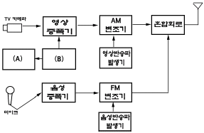
- A : 혼합기, B : 발진 신호 발생
- A : 편향기, B : 동기신호 발생
- A : 색혼합기, B : 칼라신호 발생
- A : 색조정기, B : 반송파신호 발생
(정답률: 알수없음)
35. 아날로그 방송을 하는 방송국에서 갖추어야 할 측정장비가 아닌 것은?
- TV 신호 발생기
- 파형분석기
- 벡터스코프
- 비트에러 측정기
(정답률: 알수없음)
36. 순차주사와 비월주사에 대한 설명 중 틀린 것은?
- 순차주사에서는 한 프레임의 영상이 모두 같은 시간에 샘플링된 것으로 이루어진다.
- 비월주사에서는 한 프레임의 영상이 모두 다른 시간에 샘플링된다.
- 비월주사에서 서로 다른 시간에 샘플링된 영상을 각각 제1필드와 제2필드라고 한다.
- 비월주사의 영상에서 한 장의 플레임은 통상 한 장의 필드영상으로 구성된다.
(정답률: 알수없음)
37. 지구의 자전 속도와 위성의 회전주기가 일치하여 태평양, 인도양, 대서양 상공에 위치하고 있어 전 세계를 커버 할 수 있는 통신방식은?
- 위상위성 방식
- 정지위성 방식
- 다중위성 방식
- 모노위성 방식
(정답률: 알수없음)
38. 위성 방송 중계를 위하여 방송 통신 위성에 탑재되어 있는 중계 장치를 무엇이라고 하는가?
- LNB
- TWT 증폭기
- 주파수 컨버터
- 트랜스 폰더
(정답률: 알수없음)
39. AM / FM 방송파에 대한 설명 중 옳은 것은?
- FM 방송파는 AM 방송파보다 점유주파수 대역이 넓다.
- FM 방송파는 AM 방송파보다 건물의 영향을 덜 받는다.
- FM 방송파는 AM 방송파보다 간단한 회로의 수신기가 필요하다.
- AM 방송파의 중간주파수는 10[MHz]를 사용하고 있다.
(정답률: 알수없음)
40. FM 송신기에서 높은 주파수의 신호를 낮은 주파수의 신호보다 상대적으로 큰 값으로 변조하여 송신함으로써 S/N비를 개선하는데 사용되는 회로는?
- 주파수 체배회로
- 자동 주파수 제어회로
- 프리엠퍼시스 회로
- 디엠퍼시스 회로
(정답률: 알수없음)
3과목: 방송미디어 개론
41. 디지털 텔레비전 방송에서 주로 채택하고 있는 영상압 축신호처리 방식은?
- JPEG
- M-JPEG
- ZIP-1
- MPEG-2
(정답률: 알수없음)
42. 우리나라 종합유선방송사업을 분야별로 구분하여 운영하고 있다. 다음 중 해당되지 않는 것은?
- SO(System Operator)
- NO(Network Operator)
- PP(Program Provider)
- TNM(Total Network Management)
(정답률: 알수없음)
43. 다음 중 음의 고저(Pitch)란 무엇인가?
- 음 진동의 진폭의 크기이다.
- 음이 갖고 있는 특색이다.
- 음의 진동수이다.
- 음의 방향감과 원근감이다.
(정답률: 알수없음)
44. 다음 중 CATV 선호 상의 전송손실을 보상하기 위하여 신호를 증폭하는 장치는?
- 중계증폭기
- 정합기
- 혼신방지기
- 충격방지기
(정답률: 알수없음)
45. 방송에서 음성을 제작하는 시스템의 성능을 나타내는 기술적 요소가 아닌 것은?
- Sync level
- S/N비
- 주파수 특성
- 왜율(distorion)
(정답률: 알수없음)
46. 디지털 위성방송 기술 중에서 정보신호(음성, 영상)를 반송파에 실어 정보전송에 적합한 형태로 만드는 과정을 무엇이라고 하는가?
- 변조
- 오류정정 부호화
- 양자화
- 영상압축
(정답률: 알수없음)
47. 영상신호에서 1초당 컬러버스트(Color Berst)는 몇 회 반복하는가?
- 30
- 60
- 15750
- 31500
(정답률: 알수없음)
48. 텔레비전 영상계에서 사용되는 3가지 기본 색상은?
- YELLOW, MAGENTA, CYAN
- RED, BLUE, GREEN
- WHITE, RED, BLACK
- CYAN, BLUE, YELLOW
(정답률: 알수없음)
49. 다음 중 광케이블의 장점이 아닌 것은?
- TCP/IP 통신규약 기반
- 음악과 동영상의 구현
- HFC 방식으로 망구성
- 사용자 요구에 수시로 선택
(정답률: 알수없음)
50. 다음 중 광케이블의 장점이 아닌 것은?
- 무유도성
- 광대역 특성
- 접속의 난해성
- 저손실 특성
(정답률: 알수없음)
51. 다음 중 패키지계 미디어에 해당하는 것은?
- CATV
- DBS
- CD-ROM
- VOD
(정답률: 알수없음)
52. 주파수 범위가 300~ 3000[MHz]의 전파의 주파수의 약칭은?
- MF
- HF
- VHF
- UHF
(정답률: 알수없음)
53. 주로 정지화상의 압축을 목적으로 하는 방식은?
- JPEG
- MPEG-1
- H.261
- G.711
(정답률: 알수없음)
54. 다음 중 VHF와 UHF대 고주파 전송에 가장 적합한 케이블은?
- 2선 평형 케이블
- 다선(멀티)케이블
- 트라이액시얼(triaxial) 케이블
- 동축케이블
(정답률: 알수없음)
55. SCRAMBLE 은 주로 어떤 목적으로 사용하는가?
- FM 방송에서 음질을 향상시키려고
- AM 방송에서 음질을 향상시키려고
- TV 방송에서 화질을 향상시키려고
- 방송 시청을 방해하거나 유료채널을 만들기 위함
(정답률: 알수없음)
56. MPEG 기술을 이용하여 동영상을 압축할 때의 코딩된 이미지 프레임 중 다른 어떤 프레임을 참조하지 않고 하나의 프레임만을 이용해 코딩한 것은?
- B-프레임
- D-프레임
- I-프레임
- P-프레임
(정답률: 알수없음)
57. 국내 TV방송의 음성다중 방식은 어느 방식을 사용하는 가?
- FM-FM
- AM-AM
- 2캐리어
- PM-FM
(정답률: 알수없음)
58. 방송국에서 프로그램 제작시 실제 셋트의 2차원 화면에 컴퓨터 그래픽으로 만든 화면을 기존의 크로마키 기법으로 합성하여 3차원의 영상화면을 재현해 내는 곳은?
- 가상편집실
- 가상스튜디오
- 가상녹화실
- 가상녹음실
(정답률: 알수없음)
59. 매스미디어의 기능에 대한 설명으로 상관조정기능에 해당하는 것은?
- 변화하는 환경에 사회가 제대로 적응할 수 있도록 도와주는 매스미디어의 기능
- 선대의 문화적 유산을 후대에 대물림할 수 있도록 후진을 교육 양성하는 매스미디어의 기능
- 사회에서 일어나는 여러 가지 사건들에 관한 정보를 수집정리하고 분배하는 기능
- 사람들의 기분전환이나 휴식을 도와 사회적으로 생산성을 향상시키는 기능
(정답률: 알수없음)
60. 다음 중 음의 3요소는?
- 주파수, 높이, 음색
- 음압, 세기, 폰
- 주파수, 진폭, 위상
- 강약, 고저, 음색
(정답률: 알수없음)
4과목: 전자계산기 일반 및 방송설비기준
61. 정보를 기억장치에 기억 또는 읽어내는 명령을 한 후부터 실제의 정보가 기억 또는 읽기 시작할 때까지의 소요시간은?
- Access time
- Idle time
- Run time
- Seek time
(정답률: 알수없음)
62. ASCII 코드에서 존(ZONE) 비트로 사용되는 비트의 수는?
- 1
- 2
- 3
- 4
(정답률: 알수없음)
63. 다음 중에서 컴퓨터 운영체제의 목적으로 부적합한 것은?
- 신뢰성을 향상 시킨다.
- 응답시간을 단축시킨다.
- 사용자 편의를 극소화 시킨다.
- 처리능력을 증대 시킨다.
(정답률: 알수없음)
64. 마이크로컴퓨터에서 제어용 프로그램이 저장되는 곳은?
- CPU
- ROM
- RAM
- I/O Port
(정답률: 알수없음)
65. 프로그램 작성단계에서 순서도를 작성하는 시기는?
- 문제분석과 program의 구조설계가 끝난 후
- Source의 입력이 끝난 후
- program 작성이 끝난 후
- error debugging중
(정답률: 알수없음)
66. 2의 보수 표현 방법에 의해 10진수 36과 -72를 8비트로 올바르게 표현한 것은?
- 00100100, 00111000
- 00100100, 10111000
- 00100100, 10110111
- 10100100, 01000111
(정답률: 알수없음)
67. 여러 개의 입출력주변장치 중 어느 장치로부터 인터럽트가 발생되었는지를 CPU가 하나씩 차례로 점검하여 인터럽트를 요구한 장치를 찾아내는 방식은?
- 데이지 체인
- 폴링
- 벡터
- 우선순위
(정답률: 알수없음)
68. 기억 장치에 기억된 명령이 순서대로 중앙처리 장치에서 실행될 수 있도록 지정해 주는 레지스터는?
- 명령 레지스터
- 스택 포인터
- 프로그램 카운터
- 명령어 카운터
(정답률: 알수없음)
69. 데이터의 표현단위와 관계가 먼 것은?
- 바이트(byte)
- 레코드(record)
- 메모리(memory)
- 파일(file)
(정답률: 알수없음)
70. 주기억 장치의 속도가 중앙처리장치의 속도보다 현저히 늦을 때 명령의 수행속도는 주기억 장치의 속도에 따른 제약을 받는다. 이것을 해결하기 위한 장치는?
- cache memory
- virtual memory
- segment memory
- module memory
(정답률: 알수없음)
71. 전파통신에 관한 국제 무선협약의 영어 약칭은?
- IMO
- URC
- UWC
- IRC
(정답률: 알수없음)
72. 정보통신공사업법에 있어서 공사의 종류 중 방송국설비공사가 아닌 것은?
- 영상 음향설비
- 송출설비
- 마이크로웨이브(M/W)
- 방송관리 시스템 설비
(정답률: 알수없음)
73. 470[MHz] 초과 960[MHz] 이하의 주파수 대역을 사용하고 영상 첨두포락선 전력이 1[W]이하인 무선설비의 주파수 허용편차는?
- 10[Hz]
- 500[Hz]
- 1[KHz]
- 10[KHz]
(정답률: 알수없음)
74. 다음 중 방송통신 관련 기술 기준 제정기관은?
- 전파연구소
- 정보통신기술협회
- 정보통신부
- 체신청
(정답률: 알수없음)
75. 방송법의 목적이라고 볼 수 없는 것은?
- 방송의 자유와 독립 보장
- 시청자의 권익 보호
- 민주적 여론 형성 및 국민문화의 향상 도모
- 방송기술의 발전과 이익 증진
(정답률: 알수없음)
76. 일반적으로 요구되는 수신설비의 조건이 아닌 것은?
- 내부잡음이 적을 것
- 명료도가 충분할 것
- 정합이 충분할 것
- 선택도가 클 것
(정답률: 알수없음)
77. 방송사업자가 그 업무를 폐업 또는 휴업하고자 하는 경우 행정 절차는?
- 방송위원회와 정보통신부장관에게 각 각 신고하여야 한다.
- 방송위원회와 문화관광부장관에게 각 각 신고하여야 한다.
- 방송위원회에 신고하여야 한다.
- 정보통신부장관에게 신고하여야 한다.
(정답률: 알수없음)
78. 방송위원회의 위원수는?
- 9명
- 12명
- 16명
- 20명
(정답률: 알수없음)
79. 다음 중 지상파 디지털 방송신호 중 음성신호의 대역은?
- 20[Hz] ~ 12[KHz]
- 3[Hz] ~ 20[KHz]
- 300[Hz] ~ 3.4[KHz]
- 3.4[KHz] ~ 212[KHz]
(정답률: 알수없음)
80. 다음 중 국내 지상파 디지털 텔레비전 방송의 변조 방식에 해당되는 것은?
- FM
- AM
- SSB
- 8-VSB
(정답률: 알수없음)